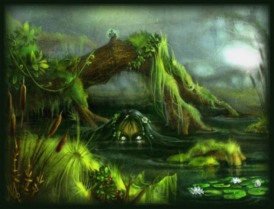

Потусторонний, сверхъестественный мир полон всякой нечисти, обитающей в старинных домах, подвальных помещениях, больничных учреждениях, кладбищах – где угодно. Однако место обитания характеризует и самого призрака – его повадки, пристрастия, наклонности, образ существования. Так или иначе, большая часть призраков живут на суше, тем интереснее водный мир с его обитателями. В мифах и легендах практически каждой народности существуют представители водных духов, которые представляют немалую опасность для людей. Попасть под влияние такого сверхъестественного существа все равно, что в воду кануть...
Подробнее